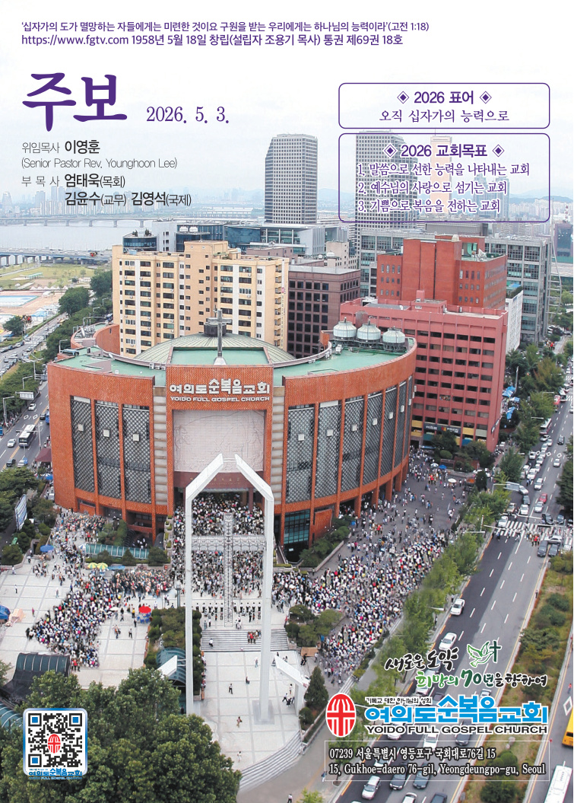

"그 때에 제자들이 예수께 나아와 이르되 천국에서는 누가 크니이까 예수께서 한 어린 아이를 불러 그들 가운데 세우 시고 이르시되 진실로 너희에게 이르노니 너희가 돌이켜 어린 아이들과 같이 … ” (이하줄임)"
| 구분 | 찬양대명 | 지휘자 | 찬 양 |
|---|---|---|---|
| 주일1부 | 베다니 | 강내우 | 주는 나를 기르시는 목자 |
| 주일2부 | 베들레헴 | 데이비드 이 | 어린아이와 같은 |
| 주일3부 | 예루살렘 | 김광현 | 어린이를 용납하라 |
| 주일4부 | 나 사 렛 | 이종진 | 예수 사랑하심은 |
| 5부 대학청년 | 임마누엘 | 이수범 | 날 사랑하시는 예수님 |
| 주일저녁 | 에벤에셀 | 윤현진 | 주님만이 나의 전부입니다 |
| 수요1 부 | 베데스다 | 김호식 | 승전가 |
| 수요찬양 | 호산나 | 윤규섭 | 너는 꽃이야 |
| 금요성령대망회 | 겟세마네 | 박상현 | 내 평생에 가는 길 |
| 토요예배 | 가브리엘 | 이용중 | 믿음의 가정 |
Those Who Will Possess the Kingdom of Heaven
📖 마(Matt.) 18:1~5
사람들은 좋은 자리, 높은 자리를 얻기 위해 치열하게 경쟁하며 살아갑니다. 그러나 그리스도인은 높은 자리를 좇기보다 하나님께서 맡기신 자리, 내가 꼭 있어야 할 자리와 꼭 필요한 자리에서 최선을 다하는 삶을 살아야 합니다.
제자들은 예수님께서 당하실 고난보다 ‘천국에서는 누가 크니이까’ 하며 높은 자리에 더 관심을 보였습니다(마 18:1). 우리의 모습이 제자들과 다르지 않은지 돌아보아야 합니다. 나를 위해 애쓰고 수고해서 얻은 모든 것은 잠시 있다가 사라지는 헛된 것에 불과합니다. 그러므로 세상의 가치를 따라 자신을 높이기 위한 삶을 살지 말고 먼저 하나님의 나라와 의를 구하는 삶을 살아야 합니다(마 6:33). 그렇게 할 때 하나님께서 우리의 필요를 아시고 채워주십니다. 또한 하나님의 영광을 위한 길이라면 고난의 길도 기꺼이 걸어가야 합니다. 하늘의 상급을 바라보며 믿음으로 십자가의 길을 걷는 우리 모두가 되기를 소망합니다.
예수님은 누가 큰 자인가를 다투는 제자들 가운데 어린아이를 세우시며 “너희가 돌이켜 어린아이들과 같이 되지 아니하면 결단코 천국에 들어가지 못하리라”고 말씀하셨습니다(마 18:2∼3). 당시 유대 사회는 어린아이를 미숙하고 불완전한 존재로 여겨 업신여겼습니다. 그러나 주님은 세상이 낮게 보는 어린아이를 통해 천국 백성이 어떠해야 하는지 가르쳐 주셨습니다. 천국에 들어가는 유일한 길은 죄에서 돌이켜 회개하는 것입니다. 그리고 회개의 모습은 어린아이처럼 순수하고 겸손한 마음으로 주님께 돌아오는 데 있습니다. 그러므로 우리는 처음 주님을 믿을 때 가졌던 감사와 감격을 잃어버리지 않았는지 돌아보아야 합니다. 또한 주님 앞에서 탐욕과 교만, 이기주의를 버리고 회개하여 첫사랑을 회복해야 합니다(계 2:5). 예수님은 오늘도 순수하고 겸손한 어린아이 같은 믿음을 찾고 계십니다.
천국에서 크다고 여겨지는 사람은 스스로 높아지려고 애쓰는 사람이 아니라 겸손하게 자신을 낮추는 사람입니다. 참된 겸손은 높은 자리를 구하는 것이 아니라 스스로 낮은 자리로 내려가 다른 이를 세우는 삶입니다. 또한 섬김은 자기중심적인 생각을 버리고 상대방의 입장에서 생각하고 연약함을 품어 주는 것입니다. 예수님은 친히 자신을 낮추사 십자가에 죽기까지 복종하셨고 하나님께서는 그런 예수님을 지극히 높여 모든 이름 위에 뛰어난 이름을 주셨습니다(빌 2:6∼11). 그러므로 삶 속에 자리잡은 교만을 버리고 주님 앞에 자신을 낮추어야 합니다. 하나님 앞에 겸손히 행하여 주님의 은혜를 풍성히 누리는 우리 모두가 되기를 축원합니다. 2026. 5. 3. 여의도순복음교회 이영훈 위임목사
— 여의도순복음교회 이영훈 위임목사
한국을 대표하는 지성인으로 불린 이어령 선생은 평생 책상 앞에서 글을 쓰며 지냈습니다. 큰딸 이민아 목사를 먼저 떠나보낸 뒤 펴낸 산문집 『딸에게 보내는 굿나잇 키스』에는 한 가지 회한이 거듭 등장합니다. 일과 명예에 매여 살다 보니 가장 가까운 딸의 얼굴조차 환하게 마주 보지 못했다는 고백입니다. 무엇이 끝까지 마음에 남는지, 그는 딸을 잃고 나서야 비로소 깨달았습니다. 책에 적은 한 줄도, 강단에서 받은 박수도 아니었습니다. 평범한 식탁에 둘러 앉아 가족들과 눈을 맞추며 웃던 그 찰나의 순간이었습니다.
가정은 사랑이 가장 깊게 흐르는 곳이지만, 역설적으로 그 사랑을 가장 당연 하게 여기기 쉬운 곳이기도 합니다. 우리는 ‘가족이니까’라는 말로 잔소리를 염려라 부르고, 익숙함을 핑계로 따뜻한 표정 하나 건네는 일을 잊고 살아 갑니다. 가까이 있고 늘 함께한다는 이유로 사랑한다는 말도, 고맙다는 인사도 자꾸 뒤로 미루곤 합니다. 이런 습관이 반복되면 결국 소중한 사람들과 마주 하지 못한 채 깊은 후회만 남게 됩니다. 어린이날과 어버이날이 이어지는 이번 주, 가족에게 먼저 다가가 따뜻한 진심을 전해 보시길 바랍니다. 자녀에게는 “네가 있어 정말 고마워”라고, 부모님께는 “낳아주시고 길러 주셔서 감사합니다” 라고 다정한 한마디를 건네 보세요. 바쁜 일상에서도 잠시 여유를 내어 곁에 있는 가족을 살피며, 서로의 소중함을 되새기는 사랑 가득한 한 주 보내시길 바랍니다.
책·장 또는 찬송가 번호를 선택하고 듣기(음성) 또는 본문 보기/가사 보기(텍스트)를 누르세요.
5/10, 5/13, 5/15, 5/16